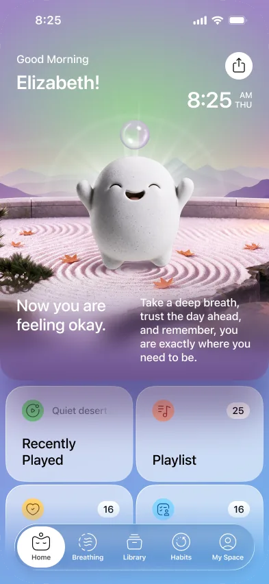
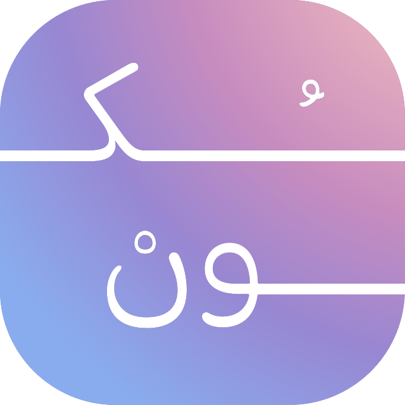
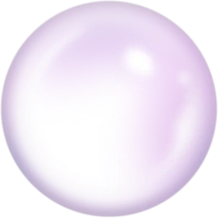

تمارين تنفّس
تمرين ٤-٧-٨ كامل وتمارين أخرى، بإيقاع مرئي يهدّئك في دقائق.
سُكون رفيقك النفسي اليومي، يساعدك أن تعيش بوعي أكبر وهدوء أعمق — من لحظة استيقاظك وحتى نهاية اليوم، كل يوم.

التنفّس والرحلات والعادات والتدوين في مكان واحد، بالعربية، بلا لوحات معقّدة ولا أرقام تقارن بها نفسك.
تمرين ٤-٧-٨ كامل وتمارين أخرى، بإيقاع مرئي يهدّئك في دقائق.
تجارب صوتية وتأملات موجّهة عن العلاقات والثقة والتغيير، بصوت مدرّبة معتمدة.
عادات صغيرة تبنيها، وأخرى تتركها، بسلاسل لا تلومك على يوم فائت.
سؤال واحد كل يوم، ومزاجك يرسم خريطتك بلا أرقام تقارن بها نفسك.
كيف تشعر اليوم؟
تذكيرات في وقتها، بنبرة صديق لا بنبرة عدّاد.
ألعاب قصيرة للتركيز والاسترخاء، دقيقتان تكفيان.
الخريطة مرآة لا حكم. لا نكافئك على شعور معيّن، ولا نعرض أرقامًا تقارن بها نفسك.
أسئلة قصيرة عن نومك وتركيزك وطاقتك. دقيقتان، ولا إجابة خاطئة.
دقيقتانالبداية اليوم
ستة محاور تُظهر أين أنت اليوم، وتنمو مع كل تسجيل حقيقي.
رحلة قصيرة تناسب حالتك الآن، ثم خطة يوم تقدر عليها فعلًا.
شهيق · ٣إشارات صغيرة، أيام أوضح.
سُكون معك من أول الصباح وحتى آخر الليل، بما يناسب كل لحظة.
ابدأ يومك بنيّة واضحة بدل أن تبدأه بردّ فعل على العالم.
ابدأ يومك بنفسك قبل أن يبدأ العالم بمطالبتك بكل شيء.
عندما تتراكم المهام والأفكار، لا تحتاج دائمًا إلى المزيد من الضغط. قد تحتاج إلى دقيقة واحدة فقط.
توقّف. تنفّس. ثم أكمل.
بدل أن تأخذ يومك معك إلى السرير، اتركه مع سُكون.
اترك يومك هنا، ونم أخفّ.
ولهذا لا يجب أن تكون تجربتك كذلك.
سُكون يتكيّف مع يومك، لأن العناية بنفسك ليست وصفة واحدة للجميع.
أول تطبيق عربي أحسّه مكتوبًا لي، مو مترجم. الصوت وحده يهدّي.
نورةالرياض
أحب إنه ما يلومني إذا فوّت يوم. أرجع وألقى خريطتي تنتظرني.
عبداللهالكويت
تمرين التنفّس صار جزءًا من روتيني قبل النوم، وفرق معي فعلًا.
لياندبي
التسجيل اليومي ما ياخذ دقيقة، ومع ذلك يوريني شيئًا ما انتبهت له.
سارةجدة
التذكيرات هادئة، مو ملحّة. أرجع للتطبيق لأني أبي، مو لأنه يزنّ عليّ.
فهدالدمام
الخريطة ورّتني إن نومي يأثر على تركيزي أكثر مما توقعت.
مريمالمنامة
قصير وواضح. اقتراح واحد بدل عشر لوحات مليانة أرقام.
يوسفمسقط
أخيرًا تطبيق ما يحاول يحوّل مشاعري إلى درجات.
دانةالدوحة
لا تنتظر يومًا صعبًا كي تعتني بنفسك. لا تنتظر أن تصل إلى الإنهاك كي تتوقف. لا تنتظر أن تصبح الأمور أكبر من قدرتك على الاحتمال.
كما تهتم بجسدك كل يوم، امنح عقلك ومشاعرك مساحة آمنة للراحة كل يوم.
سُكون صُمم ليكون تلك المساحة — مكانًا تتوقف فيه، تتنفّس، تكتب، تتعلّم، تستكشف، تستعيد تركيزك، وتعود إلى يومك.
لأن السلام الداخلي ليس مكانًا تصل إليه، بل شيء تتعلّم أن تصنع له مساحة كل يوم.

فريق سُكون بالتعاون مع مدرّبة معتمدة في البرمجة اللغوية العصبية
سُكون مبني على تسجيلات خاصة وأذونات واضحة. ما تكتبه لك وحدك، ولا نبيع بياناتك لأحد.
كل ما يهم معرفته قبل أن تبدأ: المحتوى، الخصوصية، الخريطة، وموعد الإطلاق.
كن من أوائل من يكتشفون سُكون. رسالة واحدة فقط عند الإطلاق، ويمكنك الإلغاء بضغطة واحدة.
نراسلك أول ما يفتح سُكون في بلدك. حتى ذلك الحين، خُذ نفسًا عميقًا.